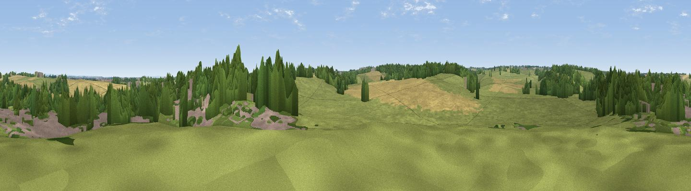

Furmard Hill
#42442 in England · top 86% of its area beats it · near SpofforthWhere it is
The exact computed spot (SE 36423 50670). Click the marker for map links.
The view, rendered

A 360° render of this exact spot computed from the terrain model, tree cover and land cover — summer colours, afternoon light, calibrated against photographs of famous viewpoints. Real trees, hedges and buildings will differ in detail.
The panorama
Grey silhouette: terrain skyline in each direction (720 bearings, Earth curvature and refraction included). Dashed green: skyline with trees (+15 m) and buildings (+8 m) as obstacles. Blue strip: how far the ground is visible on each bearing.
Where the view opens
Wedge length = distance to the farthest visible ground on that bearing (vegetation-aware). Rings at 10, 25 and 50 km.
What fills the view
51% grassland · 24% woodland · 17% cropland · 8% built-up
Angular shares of the visible panorama (visual magnitude), not map area. Landscape diversity 0.52 (0–1 Shannon).
Key numbers
More beautiful places nearby
The staircase of upgrades: each row has a higher view potential than everything closer. Driving times are estimates from straight-line distance, calibrated against real road routing — check an actual route before setting out.
| Place | Direction | Drive | Score |
|---|---|---|---|
| Tickering Hill | E · 4 km | ~9 min | 37.4 |
| Viewpoint near Kirkby Overblow | SW · 4 km | ~9 min | 63.5 |
| Viewpoint near North Rigton | W · 10 km | ~19 min | 66.6 |
| Viewpoint near Timble | W · 16 km | ~28 min | 68.1 |
| Viewpoint near Timble | W · 16 km | ~29 min | 68.3 |
| Surprise View | WSW · 17 km | ~30 min | 70.7 |
| Viewpoint near Otley | WSW · 17 km | ~30 min | 77.5 |
| Hood Hill | NNE · 34 km | ~51 min | 79.6 |
53.95085, -1.44650 · source: osm peak · position refined by local search. Computed location — check access rights before visiting.